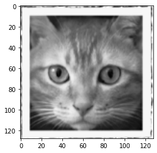
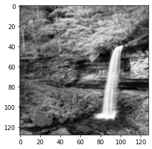
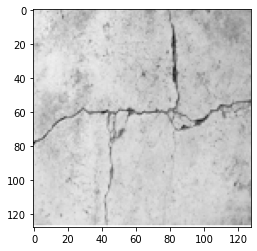

Artifical Neural Network¶
Single-layer ANN model to detect cracks in images. Here we are flattening the images so will lose spatial information, might consider a convolution kernel to preserve spatial relationships.
import numpy # useful numerical routines
import scipy.special # special functions library
import scipy.misc # image processing code
#import imageio # deprecated as typical
import imageio.v2 as imageio
import matplotlib.pyplot # import plotting routines
The file pathnames are unique to my computer and are shown here so the notebook renders and typesets correctly.
# first read and render to get imgae sizing
img_array = imageio.imread("/home/sensei/ce-5319-webroot/1-Databases/MaterialCracking/UT-881/Image0.png", as_gray = True)
img_data = 255.0 - img_array.reshape(16384)
#img_data = ((img_data/255.0)*0.99) + 0.01
matplotlib.pyplot.imshow(numpy.asfarray(img_data).reshape((128,128)),cmap = 'Greys') # construct a graphic object #
matplotlib.pyplot.show() # show the graphic object to a window #
matplotlib.pyplot.close('all')

# now we have to flatten each image, put into a csv file, and add the truth table
# myann expects
# truth, image ....
#howmanyimages = 881
import csv
howmanyimages = 20 # a small subset for demonstration
testimage = numpy.array([i for i in range(howmanyimages)])
split = 0.2 # fraction to hold out for testing
numwritten = 0
# training file
outputfile1 = "ut-881-train.csv" #local to this directory
outfile1 = open(outputfile1,'w') # open the file in the write mode
writer1 = csv.writer(outfile1) # create the csv writer
# testing file
outputfile2 = "ut-881-test.csv" #local to this directory
outfile2 = open(outputfile2,'w') # open the file in the write mode
writer2 = csv.writer(outfile2) # create the csv writer
# process truth table (absolute pathname)
groundtruth = open("/home/sensei/ce-5319-webroot/1-Databases/MaterialCracking/UT-881/UT-881-GroundTruth.csv","r") #open the file in the reader mode
reader = csv.reader(groundtruth)
truthtable=[] # empty list to store class
for row in reader:
truthtable.append(row[1])
for irow in range(len(truthtable)-1):
truthtable[irow]=truthtable[irow+1] # shift all entries by 1
#print(truthtable[0:4])
for i in range(howmanyimages):
# read the image
image_name="/home/sensei/ce-5319-webroot/1-Databases/MaterialCracking/UT-881/Image"+str(i)+".png" # build image name
img_array = imageio.imread(image_name, as_gray = True) #read the image
img_data = 255.0 - img_array.reshape(16384) # flatten the image
#img_data = ((img_data/255.0)*0.99) + 0.01 # float the pixels
newimage = numpy.insert(img_data,0,truthtable[i])
if numpy.random.uniform() <= split:
#sedn to test
writer2.writerow(newimage)# write a row to the csv file
numwritten=numwritten+1
else:
#send to train
writer1.writerow(newimage)# write a row to the csv file
numwritten=numwritten+1
outfile1.close()
outfile2.close()
print("Images segregated and processed",numwritten)
#print(img_data)
#print(newimage)
Images segregated and processed 20
class neuralNetwork: # Class Definitions
# initialize the neural network
def __init__(self, inputnodes, hiddennodes, outputnodes, learningrate):
# set number of nodes in input, hidden, and output layer
self.inodes = inputnodes
self.hnodes = hiddennodes
self.onodes = outputnodes
# learning rate
self.lr = learningrate
# initalize weight matrices
#
# link weight matrices, wih (input to hidden) and
# who (hidden to output)
# weights inside the arrays are w_i_j where link is from node i
# to node j in next layer
#
# w11 w21
# w12 w22 etc.
self.wih = (numpy.random.rand(self.hnodes, self.inodes) - 0.5)
self.who = (numpy.random.rand(self.onodes, self.hnodes) - 0.5)
# activation function
self.activation_function = lambda x:scipy.special.expit(x)
pass
# train the neural network
def train(self, inputs_list, targets_list):
# convert input list into 2D array
inputs = numpy.array(inputs_list, ndmin=2).T
# convert target list into 2D array
targets = numpy.array(targets_list, ndmin=2).T
# calculate signals into hidden layer
hidden_inputs = numpy.dot(self.wih, inputs)
# calculate signals from hidden layer
hidden_outputs = self.activation_function(hidden_inputs)
# calculate signals into output layer
final_inputs = numpy.dot(self.who, hidden_outputs)
# calculate signals from output layer
final_outputs = self.activation_function(final_inputs)
# calculate output errors (target - model)
output_errors = targets - final_outputs
# calculate hidden layer errors (split by weigths recombined in hidden layer)
hidden_errors = numpy.dot(self.who.T, output_errors)
# update the weights for the links from hidden to output layer
self.who += self.lr * numpy.dot((output_errors * final_outputs * (1.0 - final_outputs)), numpy.transpose(hidden_outputs))
# update the weights for the links from input to hidden layer
self.wih += self.lr * numpy.dot((hidden_errors * hidden_outputs * (1.0 - hidden_outputs)), numpy.transpose(inputs))
pass
# query the neural network
def query(self, inputs_list):
# convert input list into 2D array
inputs = numpy.array(inputs_list, ndmin=2).T
# calculate signals into hidden layer
hidden_inputs = numpy.dot(self.wih, inputs)
# calculate signals from hidden layer
hidden_outputs = self.activation_function(hidden_inputs)
# calculate signals into output layer
final_inputs = numpy.dot(self.who, hidden_outputs)
# calculate signals from output layer
final_outputs = self.activation_function(final_inputs)
return final_outputs
pass
print("neuralNetwork Class Loads OK")
neuralNetwork Class Loads OK
# Test case 1 p130 MYONN
# number of input, hidden, and output nodes
input_nodes = 16384 # 28X28 Pixel Image
hidden_nodes = 1638 # Should be smaller than input count (or kind of useless)
output_nodes = 2 # Classifications
learning_rate = 0.1 # set learning rate
n = neuralNetwork(input_nodes,hidden_nodes,output_nodes,learning_rate) # create an instance
print("Instance n Created")
Instance n Created
# load a training file
# replace code here with a URL get
## training_data_file = open("mnist_train_100.csv",'r') #connect the file#
training_data_file = open("ut-881-train.csv",'r') #connect the file#
training_data_list = training_data_file.readlines() #read entire contents of file into object: data_list#
training_data_file.close() #disconnect the file#
# print(len(training_data_list)) ## activate for debugging otherwise leave disabled
# train the neural network
howManyTrainingTimes = 0
howManyEpisodes = 1
for times in range(howManyEpisodes): # added outer loop for repeat training same data set
howManyTrainingRecords = 0
for record in training_data_list:
# split the values on the commas
all_values = record.split(',') # split datalist on commas - all records. Is thing going to work? #
inputs = (numpy.asfarray(all_values[1:])/255.0 * 0.99) + 0.01
# inputs = (numpy.asfarray(all_values[1:])/255.0 * 0.99) + 0.01
# print(inputs) ## activate for debugging otherwise leave disabled
# create target output values -- all 0.01 except for the label of 0.99
targets = numpy.zeros(output_nodes) + 0.01
# all_values[0] is the target for this record
# print(int(numpy.asfarray(all_values[0])))
targets[int(numpy.asfarray(all_values[0]))] = 0.99
# print(targets)
# targets = numpy.asfarray(all_values[0])
n.train(inputs, targets)
howManyTrainingRecords += 1
pass
howManyTrainingTimes += 1
learning_rate *= 0.9
pass
print ("training records processed = ",howManyTrainingRecords)
print ("training episodes = ",howManyTrainingTimes)
# load a production file
test_data_file = open("ut-881-test.csv",'r') #connect the file#
#test_data_file = open("mnist_test.csv",'r') #connect the file#
test_data_list = test_data_file.readlines() #read entire contents of file into object: data_list#
test_data_file.close() #disconnect the file#
training records processed = 16
training episodes = 1
# test the neural network
scorecard = [] # empty array for keeping score
# run through the records in test_data_list
howManyTestRecords = 0
for record in test_data_list:
# split the values on the commas
all_values = record.split(',') # split datalist on commas - all records #
# correct_label = int(all_values[0]) # correct answer is first element of all_values
correct_label = int(numpy.asfarray(all_values[0])) # correct answer is first element of all_values
# scale and shift the inputs
inputs = (numpy.asfarray(all_values[1:])/255.0 * 0.99) + 0.01
# query the neural network
outputs = n.query(inputs)
predict_label = numpy.argmax(outputs)
print("predict =",predict_label,correct_label,"= correct") # activate for small test sets only!
if (predict_label == correct_label):
scorecard.append(1)
else:
scorecard.append(0)
pass
howManyTestRecords += 1
pass
print ("production records processed =", howManyTestRecords)
## print scorecard # activate for small test sets only!
# calculate performance score, fraction of correct answers
scorecard_array = numpy.asfarray(scorecard)
print ("performance = ",scorecard_array.sum()/scorecard_array.size)
predict = 1 1 = correct
predict = 1 0 = correct
predict = 1 1 = correct
predict = 1 1 = correct
production records processed = 4
performance = 0.75
# lets try one of my own pictures
# first read and render
#img_array = scipy.misc.imread("cat128.png", flatten = True) Fuckers deprecated this utility!
img_array = imageio.imread("/home/sensei/ce-5319-webroot/1-Databases/MaterialCracking/cat128.png", as_gray = True)
img_data = 255.0 - img_array.reshape(16384)
img_data = ((img_data/255.0)*0.99) + 0.01
matplotlib.pyplot.imshow(numpy.asfarray(img_data).reshape((128,128)),cmap = 'Greys') # construct a graphic object #
matplotlib.pyplot.show() # show the graphic object to a window #
matplotlib.pyplot.close('all')
mynumber = n.query(img_data)
mylabel = numpy.argmax(mynumber)
m0=img_data.mean() # gather some statistics
v0=img_data.var()
if mylabel == 0:
msg = "No Cracks Detected"
elif mylabel == 1:
msg = "Cracks Detected"
print ("Cat Image ", msg)

Cat Image Cracks Detected
# lets try one of my own pictures
# first read and render
#img_array = scipy.misc.imread("cat128.png", flatten = True) Fuckers deprecated this utility!
img_array = imageio.imread("/home/sensei/ce-5319-webroot/1-Databases/MaterialCracking/waterfall128.png", as_gray = True)
img_data = 255.0 - img_array.reshape(16384)
img_data = ((img_data/255.0)*0.99) + 0.01
matplotlib.pyplot.imshow(numpy.asfarray(img_data).reshape((128,128)),cmap = 'Greys') # construct a graphic object #
matplotlib.pyplot.show() # show the graphic object to a window #
matplotlib.pyplot.close('all')
mynumber = n.query(img_data)
mylabel = numpy.argmax(mynumber)
m0=img_data.mean() # gather some statistics
v0=img_data.var()
if mylabel == 0:
msg = "No Cracks Detected"
elif mylabel == 1:
msg = "Cracks Detected"
print ("Waterfall Image ", msg)

Waterfall Image Cracks Detected
# lets try one of my own pictures
# first read and render
#img_array = scipy.misc.imread("cat128.png", flatten = True) Fuckers deprecated this utility!
img_array = imageio.imread("/home/sensei/ce-5319-webroot/1-Databases/MaterialCracking/concrete-cracks.png", as_gray = True)
img_data = 255.0 - img_array.reshape(16384)
img_data = ((img_data/255.0)*0.99) + 0.01
matplotlib.pyplot.imshow(numpy.asfarray(img_data).reshape((128,128)),cmap = 'Greys') # construct a graphic object #
matplotlib.pyplot.show() # show the graphic object to a window #
matplotlib.pyplot.close('all')
mynumber = n.query(img_data)
mylabel = numpy.argmax(mynumber)
m0=img_data.mean() # gather some statistics
v0=img_data.var()
if mylabel == 0:
msg = "No Cracks Detected"
elif mylabel == 1:
msg = "Cracks Detected"
print ("Cracked Concrete ", msg)

Cracked Concrete Cracks Detected
References¶
Neural Network Digit Recognizer An online mimic using same dataset
LazyProgrammer. Unsupervised Machine Learning in Python: Master Data Science and Machine Learning with Cluster Analysis, Gaussian Mixture Models, and Principal Components Analysis . Kindle Edition.
Rashid, Tariq. Make Your Own Neural Network. Kindle Edition.